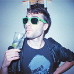

協力：国際ゲーム開発者協会日本（IGDA日本）
センス・オブ・ワンダーナイト2016
選考委員
選考は、以下の「センス・オブ・ワンダー ナイト」選考委員によって行われます。
- ジャーナリスト
（ゲーム・IT） - Tokyo VR Startups取締役
新 清士 氏
VRゲームの開発会社のよむネコ代表。デジタルハリウッド大学大学院准教授を務める。国際ゲーム開発者協会日本（IGDA日本）の設立者・名誉理事。現在はVR制作者コミュニティの運営に関わるなど、VRを中心に活動を続けている。５月に『VRビジネスの衝撃 「仮想世界」が巨大マネーを生む』（NHK出版新書）を出版。

- UBM Tech
- Group EVP
Simon Carless 氏
UBM TechWebのゲーム・ネットワークの上級副社長。Developer Conference(GDC)やゲーム開発者向け専門サイトGamasutra.comの責任者である。
サイモン氏は、毎年開催される"サンダンス・ゲーム・フェスティバル"の名誉会長であり、毎年GDCでアワードを実施しているほか、the Independent Games Summit開催にあたってはアドバイザーを務めている。

- Joju Games
- Studio Manager
Juan Gril 氏
Jojuゲームの創設者兼スタジオマネージャーとして、カジュアルゲーム開発に18年以上の経験を持ち、アタリ社、MTVネットワーク、ディズニーなどグローバル企業を顧客に持っている。
Gril氏はGDCで開催されるスマートフォン＆タブレット・ゲーム・サミットのアドバイザーを務め、IndiecadeにおいてIndieXchange programの議長している。
- 神奈川電子技術研究所
[同人サークル] - サークル代表、ゲーム企画、プログラム
北山 功 氏
2002年に神奈川電子技術研究所を立ち上げる。
その後、コミックマーケットに約20回サークル参加、ドークボットで講演、センス・オブ・ワンダーナイトで講演、IGDAで講演、作品は『僕は森世界の神になる』『天才科学者ばいおるる』『QUALIA』など20作品以上に及ぶ。
現在も人工生命、セルオートマトンなど得意のAI技術を応用したゲームを創作中。
- A Crowd of Monsters
- CEO
Ramon Naeval 氏
Naeval氏は1992年、12歳でゲームを遊びはじた時に自分を表現するための最高のメディアだと気付いた。1999年からOnez, Ociojoven, Anaitgames, Eurogamer, Videoshock and Vandalなどのスペインのメディアに寄稿し、2003年からNerlaska, Gameloft, Digital Legends, Abylight, U Play, Blit Software and A Crowd of Monstersなどのゲームを制作してきた。複数の大学でゲームに関する講義を行っているほか、ゲーム開発協会のメンバーとしても活躍している。

- Necrosoft Games
- Director
Brandon Sheffield 氏
シェフィールド氏は、カリフォルニア州オークランドに拠点がある独立系ゲーム会社Necrosoft Gameのディレクター。
以前はゲーム開発者向け雑誌の編集長、ゲーム開発者向けオンラインサイトGamasutraの特別寄稿者として活躍。また、同氏の活動のひとつとして、優秀なアジア発のゲームを米国市場に紹介している。同氏は米国Game Developer Conference(GDC)およびIGF中国のアドバイザーも兼任している。
- ソニー・インタラクティブエンタテインメント
ジャパンアジア - 戦略企画部ビジネスプランニング部・課長
多田 浩二 氏
1994年株式会社ソニー・コンピュータエンタテインメント入社。 ディレクターとして複数のPlayStation®タイトルを制作。その後モーションキャプチャースタジオ、サウンドチームのマネジメントに従事し、2000年よりプロデューサーとして複数のタイトル制作に携わる。2013年よりソニー・コンピュータエンタテインメントジャパンアジアにてディベロッパーリレーション業務を担当。現在はPlayStation®VRのプロジェクト推進を担当。
- NPO法人オキュフェス
- 高橋建滋 氏
1998年（株）コーエー入社。「真・三國無双１～４」などに携わる。2008年に（株）クリーチャーズに転職し「ポケパーク」のディレクターなどを携わる。
2013年にOculusRift DK1をキックスターターで入手し、VRソフト開発とVRソフトの発表会OfuFes（現Japan VR Fest）をスタート。 2014年にVR専業として独立。同年OcuFesをNPO法人化。
以後日本のVR普及と世界のVR開発者のために精力的に活動中。
- 雑魚雑魚
SOWN2011では暗暗迷路(ハドソン賞/GMO賞)、翌年にはTAISO(GMO賞)、昨年はTSURI(BestPresentationAward)と３年連続出場と受賞を果たす。 毎年斬新なアイデア光るアプリを制作するも、内容と関係のないプレゼンを繰り広げ会場を湧かせる。あいつらアプリ作ってないんじゃないか？とゴーストクリエイターの噂が流れる中、ついにSOWN審査員に抜擢される。 "テラスハウスのような台本のないアプリ"を好む中年クリエイティブ集団。